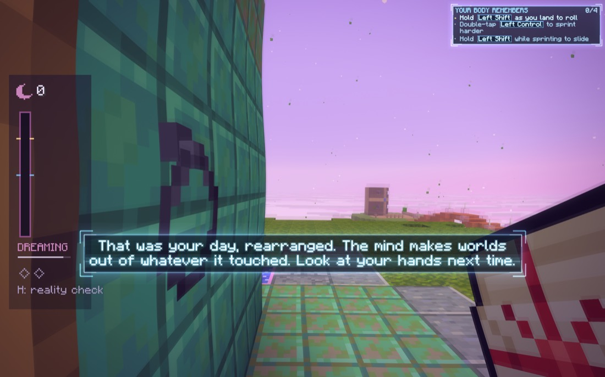
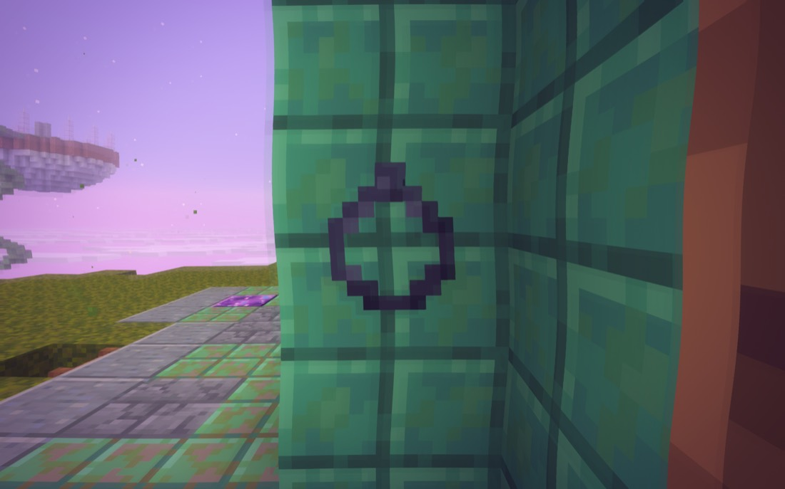
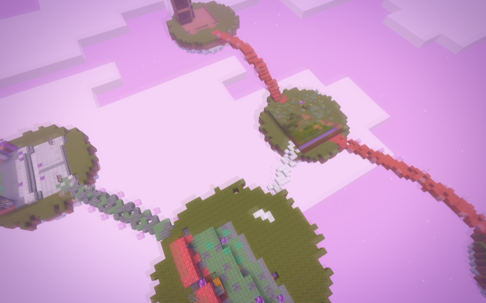
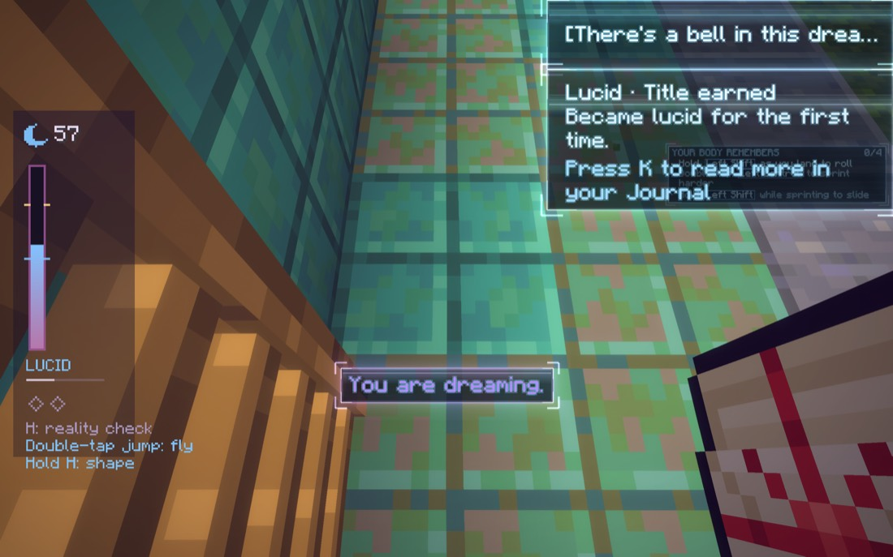
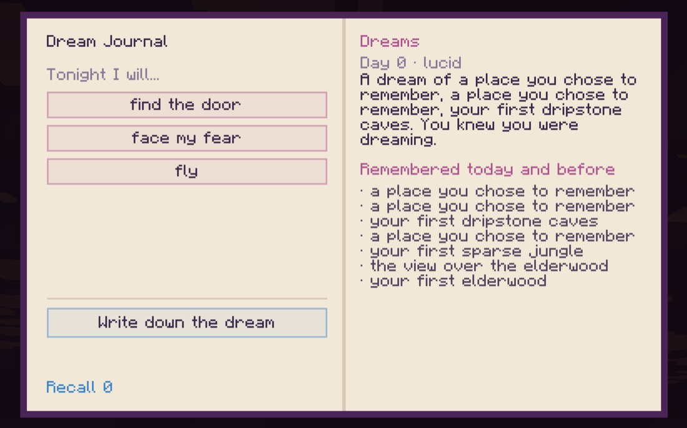
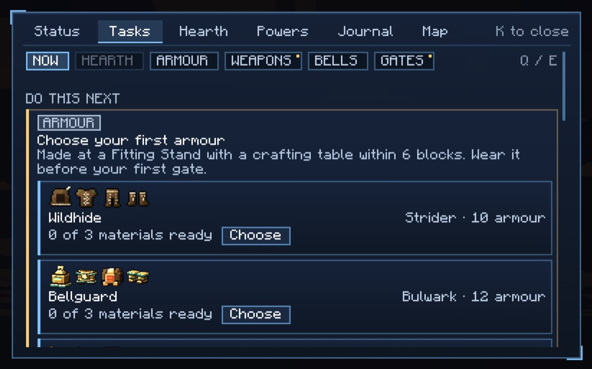

<title>Dreams Worth Having</title>
<meta name="claude:viewport-fit-sides" content="cover">
<link rel="preconnect" href="https://fonts.googleapis.com">
<link rel="preconnect" href="https://fonts.gstatic.com" crossorigin>
<link rel="stylesheet" href="https://fonts.googleapis.com/css2?family=Fraunces:ital,opsz,wght@0,9..144,400;0,9..144,600;1,9..144,400&family=Atkinson+Hyperlegible:ital,wght@0,400;0,700;1,400&family=Pixelify+Sans:wght@400;500&family=JetBrains+Mono:wght@400;500&display=swap">
<style>
/* Layout: one reading column under a lilac night; wide bands for the film strip and the night's storyboard. Dark first (a dream at night), pearl paper in light. */
:root {
  --bg: #120f1d; --panel: #1a1629; --panel2: #221c36; --line: #352c52; --fg: #ece6f7; --muted: #a79cc2;
  --lilac: #b79cf0; --lilac-soft: rgba(183,156,240,.15); --pearl: #f1ecfb; --rose: #e79ac9; --gold: #f2cf7a;
  --sky1: #3a2a63; --sky2: #8d6fc9; --sky3: #e7a6cf; --cloud: #f6dff0; --hud: rgba(14,10,26,.62);
  --yes: #7fd6a0; --no: #ef7d7d; --warn: #f0b36a;
  --display: "Fraunces", "Iowan Old Style", "Palatino Linotype", Georgia, serif;
  --body: "Atkinson Hyperlegible", "Avenir Next", "Segoe UI", system-ui, sans-serif;
  --pixel: "Pixelify Sans", "Courier New", monospace;
  --mono: "JetBrains Mono", ui-monospace, Menlo, Consolas, monospace;
  color-scheme: dark;
}
@media (prefers-color-scheme: light) { :root:not([data-theme="dark"]) {
  --bg: #f4f1fa; --panel: #ebe5f6; --panel2: #e1d9f1; --line: #c9bde3; --fg: #1d1630; --muted: #5d5277;
  --lilac: #6a45c4; --lilac-soft: rgba(106,69,196,.11); --pearl: #ffffff; --rose: #b0457f; --gold: #9a6c00;
  --sky1: #5a43a0; --sky2: #9c80db; --sky3: #eab4d6; --cloud: #fbeaf5; --hud: rgba(20,14,38,.62);
  --yes: #24834a; --no: #b73333; --warn: #a2610b; color-scheme: light } }
:root[data-theme="light"] {
  --bg: #f4f1fa; --panel: #ebe5f6; --panel2: #e1d9f1; --line: #c9bde3; --fg: #1d1630; --muted: #5d5277;
  --lilac: #6a45c4; --lilac-soft: rgba(106,69,196,.11); --pearl: #ffffff; --rose: #b0457f; --gold: #9a6c00;
  --sky1: #5a43a0; --sky2: #9c80db; --sky3: #eab4d6; --cloud: #fbeaf5; --hud: rgba(20,14,38,.62);
  --yes: #24834a; --no: #b73333; --warn: #a2610b; color-scheme: light }

body { background: var(--bg); color: var(--fg); font: 400 17px/1.62 var(--body); }
.wrap { max-width: 820px; margin: 0 auto; padding-block: 44px 72px;
  padding-left: max(16px, env(safe-area-inset-left, 0px)); padding-right: max(16px, env(safe-area-inset-right, 0px));
  display: grid; gap: 52px; }
.band-in { max-width: 1060px; margin: 0 auto; padding-block: 8px;
  padding-left: max(16px, env(safe-area-inset-left, 0px)); padding-right: max(16px, env(safe-area-inset-right, 0px));
  display: grid; gap: 18px; }
h1, h2, h3 { font-family: var(--display); font-weight: 400; text-wrap: balance; line-height: 1.12; margin: 0; }
h1 { font-size: clamp(2.4rem, 7vw, 3.8rem); letter-spacing: -.01em; }
h1 em { font-style: italic; color: var(--lilac); }
h2 { font-size: clamp(1.5rem, 4vw, 1.95rem); }
h3 { font-size: 1.18rem; font-weight: 600; }
p { margin: 0; max-width: 66ch; }
.col { display: grid; gap: 14px; min-width: 0; }
.eyebrow { font: 500 .76rem/1 var(--mono); letter-spacing: .14em; text-transform: uppercase; color: var(--lilac); }
.muted { color: var(--muted); }
.small { font-size: .9rem; }
code { font: .84em var(--mono); background: var(--lilac-soft); padding: 1px 5px; border-radius: 4px; overflow-wrap: anywhere; }
a { color: var(--lilac); }
b { font-weight: 700; }
.thesis { border-left: 3px solid var(--lilac); padding: 6px 0 6px 18px; font: italic 400 1.38rem/1.42 var(--display); max-width: 36ch; }
.status { font: 500 .8rem/1.5 var(--mono); color: var(--gold); letter-spacing: .03em; }
.quote { font: italic 400 1.02rem/1.55 var(--display); color: var(--muted); max-width: 62ch; }

/* film strip of today's tour */
.band { background: var(--panel); border-block: 1px solid var(--line); padding-block: 30px; }
.film { display: grid; grid-template-columns: repeat(3, minmax(0, 1fr)); gap: 14px; }
.film figure { margin: 0; display: grid; gap: 8px; align-content: start; min-width: 0; }
.film img { width: 100%; height: auto; border-radius: 6px; border: 1px solid var(--line); display: block; }
.film figcaption { font-size: .88rem; line-height: 1.45; color: var(--muted); }
.film figcaption b { color: var(--fg); }
@media (max-width: 760px) { .film { grid-template-columns: repeat(2, minmax(0, 1fr)); } }
@media (max-width: 460px) { .film { grid-template-columns: 1fr; } }

/* findings */
.finds { display: grid; gap: 12px; margin: 0; padding: 0; list-style: none; }
.finds li { display: grid; grid-template-columns: 22px minmax(0, 1fr); gap: 10px; }
.finds li::before { content: ""; width: 9px; height: 9px; margin-top: 9px; border: 1.5px solid var(--rose); transform: rotate(45deg); justify-self: center; }

/* tables */
.tbl { overflow-x: auto; border: 1px solid var(--line); border-radius: 8px; }
table { border-collapse: collapse; width: 100%; font-size: .92rem; line-height: 1.45; }
th, td { text-align: left; vertical-align: top; padding: 9px 12px; border-bottom: 1px solid var(--line); }
th { font: 500 .74rem/1.3 var(--mono); letter-spacing: .08em; text-transform: uppercase; color: var(--muted); background: var(--panel); }
tr:last-child td { border-bottom: 0; }
td.k { color: var(--fg); font-weight: 700; white-space: nowrap; }
.today { color: var(--no); }
.then { color: var(--yes); }

/* the night storyboard: mock game frames */
.frames { display: grid; grid-template-columns: repeat(3, minmax(0, 1fr)); gap: 14px; }
@media (max-width: 760px) { .frames { grid-template-columns: 1fr; } }
.frame { display: grid; gap: 8px; min-width: 0; }
.screen { position: relative; aspect-ratio: 16 / 10; max-width: 100%; border-radius: 6px; overflow: hidden; border: 1px solid var(--line);
  background: linear-gradient(180deg, var(--sky1) 0%, var(--sky2) 52%, var(--sky3) 74%, var(--cloud) 100%); }
.screen .sea { position: absolute; left: 0; right: 0; bottom: 0; height: 24%; background:
  repeating-linear-gradient(90deg, rgba(255,255,255,.55) 0 18px, rgba(255,255,255,.28) 18px 34px); opacity: .8; }
.screen svg { position: absolute; inset: 0; width: 100%; height: 100%; }
.hudline { position: absolute; left: 50%; transform: translateX(-50%); width: max-content; max-width: 88%; text-align: center; font: 500 clamp(.6rem, 1.6vw, .78rem)/1.25 var(--pixel);
  color: #fff; background: var(--hud); padding: 3px 8px; border-radius: 3px; letter-spacing: .02em; }
.hudline.top { top: 9%; }
.hudline.mid { top: 46%; }
.hudline.low { bottom: 8%; }
.moon { position: absolute; top: 4%; left: 50%; transform: translateX(-50%); width: 34%; height: 4px; border-radius: 4px; background: rgba(255,255,255,.22); overflow: hidden; }
.moon i { display: block; height: 100%; background: #fff; border-radius: 4px; }
.frame figcaption { font-size: .88rem; color: var(--muted); line-height: 1.45; }
.frame figcaption b { color: var(--fg); }
.mock { font: 500 .72rem/1 var(--mono); letter-spacing: .1em; text-transform: uppercase; color: var(--muted); }

/* loop diagram */
.diagram { overflow-x: auto; }
.diagram svg { display: block; width: 100%; min-width: 620px; height: auto; }
.d-box { fill: var(--panel2); stroke: var(--line); }
.d-key { fill: var(--lilac-soft); stroke: var(--lilac); }
.d-t { fill: var(--fg); font: 600 13px var(--body); }
.d-s { fill: var(--muted); font: 400 11.5px var(--body); }
.d-line { stroke: var(--muted); stroke-width: 1.4; fill: none; }
.d-gold { stroke: var(--gold); stroke-width: 1.6; fill: none; stroke-dasharray: 4 4; }
.d-goldt { fill: var(--gold); font: 500 11.5px var(--body); }
.d-rose { stroke: var(--rose); stroke-width: 1.6; fill: none; stroke-dasharray: 3 4; }
.d-roset { fill: var(--rose); font: 500 11.5px var(--body); }
.d-road { fill: var(--pearl); stroke: var(--line); }
.d-ring { fill: none; stroke: var(--gold); stroke-width: 2.2; }
.d-door { fill: var(--pearl); opacity: .9; }
.d-cloud { fill: var(--cloud); opacity: .55; }

/* keep cards */
.keep { display: grid; grid-template-columns: repeat(2, minmax(0, 1fr)); gap: 14px; }
@media (max-width: 620px) { .keep { grid-template-columns: 1fr; } }
.card { background: var(--panel); border: 1px solid var(--line); border-radius: 8px; padding: 16px 18px; display: grid; gap: 8px; align-content: start; min-width: 0; }
.card h3 { color: var(--fg); }
.card .tag { font: 500 .72rem/1 var(--mono); letter-spacing: .1em; text-transform: uppercase; color: var(--gold); }
.line { font: 400 .92rem/1.45 var(--pixel); color: var(--pearl); background: var(--hud); border-radius: 4px; padding: 7px 10px; }
:root:not([data-theme="dark"]) .line { color: #fff; }

/* exits */
.exits { display: grid; grid-template-columns: repeat(4, minmax(0, 1fr)); gap: 12px; }
@media (max-width: 760px) { .exits { grid-template-columns: repeat(2, minmax(0, 1fr)); } }
@media (max-width: 420px) { .exits { grid-template-columns: 1fr; } }
.exit { border-top: 2px solid var(--lilac); padding-top: 10px; display: grid; gap: 6px; align-content: start; min-width: 0; }
.exit h3 { font-size: 1.02rem; }
.exit p { font-size: .9rem; color: var(--muted); }

/* alternatives */
.alts { display: grid; grid-template-columns: repeat(3, minmax(0, 1fr)); gap: 12px; }
@media (max-width: 760px) { .alts { grid-template-columns: 1fr; } }
.alt { border: 1px solid var(--line); border-radius: 8px; padding: 14px 16px; display: grid; gap: 8px; align-content: start; min-width: 0; }
.alt.pick { border-color: var(--lilac); background: var(--lilac-soft); }
.alt .tag { font: 500 .72rem/1 var(--mono); letter-spacing: .1em; text-transform: uppercase; color: var(--muted); }
.alt.pick .tag { color: var(--lilac); }
.alt p { font-size: .92rem; }

/* stages */
.stages { display: grid; gap: 14px; margin: 0; padding: 0; list-style: none; counter-reset: st -1; }
.stages li { display: grid; grid-template-columns: 44px minmax(0, 1fr); gap: 12px; counter-increment: st; }
.stages li::before { content: counter(st); font: 400 1.7rem/1 var(--display); color: var(--lilac); }
.stages h3 { font-size: 1.05rem; }
.stages p { font-size: .94rem; }

/* decisions */
.decs { display: grid; gap: 12px; margin: 0; padding: 0; list-style: none; counter-reset: dc; }
.decs li { display: grid; grid-template-columns: 40px minmax(0, 1fr); gap: 12px; counter-increment: dc;
  border-bottom: 1px solid var(--line); padding-bottom: 12px; }
.decs li::before { content: counter(dc); font: 600 1.15rem/1.4 var(--mono); color: var(--lilac); }
.decs p { font-size: .96rem; }
.decs .rec { font: 500 .72rem/1 var(--mono); letter-spacing: .08em; text-transform: uppercase; color: var(--yes); margin-top: 4px; display: inline-block; }
.decs .rec.no { color: var(--warn); }

@media (prefers-reduced-motion: no-preference) {
  .moon i.drain { animation: drain 14s linear infinite; }
  @keyframes drain { from { width: 100%; } to { width: 6%; } }
}
</style>

<main>
<div class="wrap">

  <header class="col" style="gap:20px">
    <span class="eyebrow">AWAKEN · plan for approval · 3 Nov 2026</span>
    <h1>Dreams <em>worth having</em></h1>
    <p class="thesis">A dream is where you win back something an earlier you already knew: a move, a hidden place, or a bell.</p>
    <p>You asked for something better than the dream we have: parkour on a timer, puzzles that make you remember secrets or moves, maybe bells, and an end to jumping in the void to get out. This page shows what a dream is today (filmed on GitHub's Mac), what it should be for, how one night plays, and twelve yes-or-no decisions.</p>
    <p class="status">Planning only. Nothing is built. Full plan: docs/dreams/PLAN.md on claude/lucid-dreams-plan-eda9c1.</p>
  </header>

</div>

<section class="band" aria-labelledby="today-h">
  <div class="band-in">
    <span class="eyebrow">Today, filmed (tour dream-today, CI run 41586108055)</span>
    <h2 id="today-h">A tour of chunks, with nothing to do</h2>
    <div class="film">
      <figure>
        <figcaption><b>What you see first.</b> Your face against a wall. A meter at 0. The first line is in the past tense ("That was your day, rearranged") because it fires as you arrive.</figcaption></figure>
      <figure>
        <figcaption><b>Turning round.</b> A wall one way, a fence the other. Nothing says where to go.</figcaption></figure>
      <figure>
        <figcaption><b>The whole dream.</b> Your day cut into 16-block pieces on floating discs, joined by bridges. Nothing is a destination.</figcaption></figure>
      <figure>
        <figcaption><b>Going lucid.</b> Five presses of H in about 12 seconds. Then: fly, shape, a title toast. Powers with nothing to use them on.</figcaption></figure>
      <figure>
        <figcaption><b>What you keep.</b> A summary that repeats itself, "Recall 0", and three intentions worth ten points of a meter.</figcaption></figure>
      <figure>
        <figcaption><b>The Tasks page.</b> Dreams aren't on it. You can't tell one is coming or why it would matter.</figcaption></figure>
    </div>
  </div>
</section>

<div class="wrap">

  <section class="col" aria-labelledby="why-h">
    <span class="eyebrow">What the code and the tour show</span>
    <h2 id="why-h">Why it's boring, confusing and useless</h2>
    <ul class="finds">
      <li><p><b>It has no goal.</b> The planner lays out four to eight memories as islands and joins them with bridges. That is a layout, not a challenge. The only goals in a dream today are the six bell puzzles added on 2 Nov, one per dream and easy to miss.</p></li>
      <li><p><b>Thirteen mechanics, none tied to a goal:</b> the meter, reality checks, dream signs, intentions, the midnight bell, recall, flying, shaping, summoning, nightmares, the mentor, visions and doors. The module was built on the project's first day and plugs into nothing built since.</p></li>
      <li><p><b>Its directions arrive late or never.</b> The dream talks through the waking world's notice queue. The bell's line came 29 seconds after arriving. "You can fly" and "You fall... and land where you began" were never shown at all; they were filed unread when you woke.</p></li>
      <li><p><b>The rewards stay in the dream.</b> Dream Residue, a sliver of XP, and bonuses that only make the next dream's meter fill faster. The one thing that reaches the waking world (a far place, a vision) is handed over for nothing.</p></li>
      <li><p><b>The void is the exit.</b> A dream lasts 3 to 8 minutes. Falling twice is the quickest way out, so that's what you do.</p></li>
      <li><p><b>It's forced.</b> 40% to 95% of nights become a dream, whether you want one or not (sneaking as you lie down skips it, but nothing tells you).</p></li>
      <li><p><b>It even blames you wrongly.</b> On waking, the first bell (which needs no lucidity at all, and which you never went near) left the line <i>"You weren't lucid enough to reach it and hold it. Be clearer in the next one."</i></p></li>
    </ul>
  </section>

  <section class="col" aria-labelledby="for-h">
    <span class="eyebrow">Designed from the goal down</span>
    <h2 id="for-h">What a dream is for</h2>
    <p>The story already answers it. The Lucidium is where minds make things. The Sleepers went into a shared dream and never woke. The Signal is you, from a loop that reached the bottom, sending advice back up through the Dream. And the first thing the game ever tells you is "Your body remembers."</p>
    <p>So a dream is <b>where you remember what an earlier you already knew</b>. The waking game is the hundred bells, your rank, your Hearth and the truth. A dream is a short trial at night that hands back one thing for tomorrow: a move, a hidden place, a bell, a fear let go, or a lesson from your mentor.</p>
    <div class="diagram" role="img" aria-label="The night's loop: a dream waits, you sleep, arrive in your own room, press H to take control, play one trial against the clock, take the prize, wake with it; a fall is caught back to the last ring; Esc wakes you and the dream still waits.">
      <svg viewBox="0 0 760 250" xmlns="http://www.w3.org/2000/svg">
        <rect class="d-box" x="8" y="40" width="112" height="62" rx="8"/>
        <text class="d-t" x="20" y="64">A dream waits</text>
        <text class="d-s" x="20" y="82">your bed glows;</text>
        <text class="d-s" x="20" y="96">Tasks says so</text>
        <rect class="d-box" x="140" y="40" width="112" height="62" rx="8"/>
        <text class="d-t" x="152" y="64">Your own room</text>
        <text class="d-s" x="152" y="82">facing the door;</text>
        <text class="d-s" x="152" y="96">the end in sight</text>
        <rect class="d-key" x="272" y="40" width="104" height="62" rx="8"/>
        <text class="d-t" x="284" y="64">Press H</text>
        <text class="d-s" x="284" y="82">the goal line</text>
        <text class="d-s" x="284" y="96">and the clock</text>
        <rect class="d-box" x="396" y="40" width="120" height="62" rx="8"/>
        <text class="d-t" x="408" y="64">One trial</text>
        <text class="d-s" x="408" y="82">a Run, a Room,</text>
        <text class="d-s" x="408" y="96">the Chase, the Duel</text>
        <rect class="d-key" x="536" y="40" width="96" height="62" rx="8"/>
        <text class="d-t" x="548" y="64">The prize</text>
        <text class="d-s" x="548" y="82">shown in the</text>
        <text class="d-s" x="548" y="96">dream, 2 to 4 s</text>
        <rect class="d-box" x="652" y="40" width="100" height="62" rx="8"/>
        <text class="d-t" x="664" y="64">You wake</text>
        <text class="d-s" x="664" y="82">holding it; the</text>
        <text class="d-s" x="664" y="96">morning card</text>
        <path class="d-line" d="M120 71 H140 M252 71 H272 M376 71 H396 M516 71 H536 M632 71 H652"/>
        <path class="d-gold" d="M456 102 C456 150 420 150 420 112"/>
        <text class="d-goldt" x="376" y="160">a fall is caught: back to the last ring, 3 s</text>
        <path class="d-rose" d="M456 102 V196 H702 V102"/>
        <text class="d-roset" x="470" y="214">Esc → Wake up, or the clock runs out: you wake, the dream still waits</text>
      </svg>
    </div>
  </section>

  <section class="col" aria-labelledby="ideas-h">
    <span class="eyebrow">Your ideas, against that goal</span>
    <h2 id="ideas-h">Parkour gives moves, puzzles give places, bells keep their six</h2>
    <div class="tbl"><table>
      <thead><tr><th>Your idea</th><th>Verdict</th><th>Why</th></tr></thead>
      <tbody>
        <tr><td class="k">Parkour on a timer</td><td class="then">Yes: the Runs</td><td>The best way to remember a move is to do it. Each Run is built around one move, under a clock, through geometry a gate can't have: a road that lays itself as you look along it, walls that slide in from the clouds, ledges that fold out of a sheer face.</td></tr>
        <tr><td class="k">Puzzles that make you remember</td><td class="then">Yes: the Rooms</td><td>Each Room is one dream rule (look away and it moves; don't wake the sleeper; notice what's wrong). The prize is a real hidden place in your world, put on your map.</td></tr>
        <tr><td class="k">Moves as rewards</td><td class="then">Yes, from Runs</td><td>The game already has moves it never tells you: the landing slide, dropping to the ledge below, the rope's release window. A Run teaches one by play, and your body remembers it.</td></tr>
        <tr><td class="k">Bells</td><td class="then">Yes, the six</td><td>The hundred already gives dreams six bells. Each gets its own dream instead of hiding in a jumble. More would take bells from elsewhere in the hundred, so that's your call (decision 7).</td></tr>
        <tr><td class="k">A timer</td><td class="then">Yes: lucidity is the clock</td><td>Lucidity stops being a meter you fill with H. It becomes how long you can stay lucid. Every lucidity bonus you can earn today becomes seconds.</td></tr>
      </tbody>
    </table></div>
  </section>

</div>

<section class="band" aria-labelledby="night-h">
  <div class="band-in">
    <span class="eyebrow">One night, start to finish · <span class="mock">mock-ups, not screenshots</span></span>
    <h2 id="night-h">You'll know what to do within five seconds</h2>
    <div class="frames">
      <figure class="frame">
        <div class="screen" aria-hidden="true">
          <svg viewBox="0 0 160 100" preserveAspectRatio="none"><rect x="0" y="0" width="22" height="100" fill="#5b3f2a" opacity=".9"/><rect x="138" y="0" width="22" height="100" fill="#5b3f2a" opacity=".9"/><rect x="0" y="0" width="160" height="12" fill="#4a3322" opacity=".9"/><rect x="0" y="84" width="160" height="16" fill="#6b4a33"/><rect x="118" y="44" width="5" height="20" fill="#f6efe0" opacity=".9"/><rect x="120" y="40" width="3" height="3" fill="#f2cf7a"/></svg>
          <span class="hudline mid">You're dreaming. Press H to take control.</span>
        </div>
        <figcaption><b>Arriving.</b> You're in your own room (the Day Journal's home), facing the open door. Far off through it: the Waking Door, a bell inside. One line, drawn by the dream itself at once. No meter.</figcaption>
      </figure>
      <figure class="frame">
        <div class="screen" aria-hidden="true">
          <svg viewBox="0 0 160 100" preserveAspectRatio="none"><polygon points="62,100 98,100 84,58 76,58" fill="#f6f1fb"/><rect x="74" y="40" width="10" height="12" fill="#f6f1fb" opacity=".95"/><rect x="40" y="36" width="5" height="34" fill="#f6f1fb" opacity=".85"/><rect x="112" y="30" width="5" height="40" fill="#f6f1fb" opacity=".85"/><ellipse cx="80" cy="47" rx="9" ry="7" fill="none" stroke="#f2cf7a" stroke-width="1.6"/><rect x="77" y="18" width="6" height="12" fill="#fff" opacity=".8"/></svg>
          <div class="moon"><i class="drain" style="width:72%"></i></div>
          <span class="hudline top">Get to the door at the end before the dream fades.</span>
          <span class="hudline low">This dream remembers the wall-run.</span>
        </div>
        <figcaption><b>After H.</b> The room stops drifting. One goal line, and a thin crescent that empties: the clock. Walls stand over the gaps ahead; a ring of light marks the next checkpoint.</figcaption>
      </figure>
      <figure class="frame">
        <div class="screen" aria-hidden="true">
          <svg viewBox="0 0 160 100" preserveAspectRatio="none"><rect x="58" y="22" width="44" height="64" fill="#fff" opacity=".85"/><rect x="64" y="28" width="32" height="58" fill="#e9dcfb"/><rect x="74" y="44" width="12" height="14" fill="#c9954a"/></svg>
          <span class="hudline top">Your body remembers the wall-run.</span>
          <span class="hudline low">Sprint and hold jump along a wall to run on it.</span>
        </div>
        <figcaption><b>The door.</b> The prize plays in the dream for a few seconds, then you wake. The move is marked in THE BODY with its keys; the morning card lists what you kept and your time.</figcaption>
      </figure>
    </div>
    <p class="small muted">A fall is never the end: the dream catches you with a soft swoop back to the last ring you passed and takes three seconds off the clock. Esc shows <b>Wake up</b> in every dream. If the clock runs out, "The dream slipped away." You wake, and the dream waits for another night.</p>
  </div>
</section>

<div class="wrap">

  <section class="col" aria-labelledby="run-h">
    <span class="eyebrow">A Run, from the side</span>
    <h2 id="run-h">Parkour on the clock, one move each</h2>
    <p>Each Run is an authored order of pieces laid by code and proved by a solver that also sets the par, the way the gates' Gauntlet does. Medals use the Gauntlet's rule. Your best run becomes your ghost when you replay it.</p>
    <div class="diagram" role="img" aria-label="Side view of a Run: your room, a road, a wall-run over a gap, a ring, ledges, a ring, a gap with a wall jump, and the Waking Door. A fall into the clouds is caught back to the last ring.">
      <svg viewBox="0 0 760 210" xmlns="http://www.w3.org/2000/svg">
        <rect class="d-cloud" x="0" y="170" width="760" height="40"/>
        <rect class="d-box" x="14" y="92" width="64" height="46" rx="3"/>
        <text class="d-s" x="20" y="156">your room</text>
        <rect class="d-road" x="78" y="128" width="96" height="8"/>
        <rect class="d-road" x="214" y="60" width="10" height="76"/>
        <rect class="d-road" x="250" y="60" width="10" height="76"/>
        <text class="d-s" x="196" y="54">wall-run</text>
        <rect class="d-road" x="292" y="128" width="58" height="8"/>
        <ellipse class="d-ring" cx="320" cy="108" rx="10" ry="16"/>
        <text class="d-goldt" x="306" y="82">ring</text>
        <rect class="d-road" x="384" y="112" width="24" height="6"/>
        <rect class="d-road" x="432" y="96" width="24" height="6"/>
        <rect class="d-road" x="480" y="80" width="24" height="6"/>
        <text class="d-s" x="414" y="70">ledges fold out</text>
        <ellipse class="d-ring" cx="520" cy="62" rx="10" ry="16"/>
        <rect class="d-road" x="534" y="80" width="54" height="8"/>
        <rect class="d-road" x="612" y="34" width="10" height="54"/>
        <text class="d-s" x="588" y="28">wall jump</text>
        <rect class="d-road" x="646" y="80" width="100" height="8"/>
        <rect class="d-door" x="700" y="26" width="26" height="54" rx="2"/>
        <text class="d-s" x="682" y="104">Waking Door</text>
        <path class="d-gold" d="M372 140 C372 178 340 178 330 140"/>
        <text class="d-goldt" x="352" y="198">a fall: caught at the last ring, -3 s</text>
      </svg>
    </div>
    <div class="tbl"><table>
      <thead><tr><th>Run</th><th>Waits once</th><th>What you do</th><th>The dream's twist</th></tr></thead>
      <tbody>
        <tr><td class="k">The first dream</td><td>level 12</td><td>walk, a gap, a step up, H to start; the Dreaming Bell at the end</td><td>the road lays itself as you look along it</td></tr>
        <tr><td class="k">The wall</td><td>from the start</td><td>wall-runs over gaps, wall jumps between facing walls</td><td>walls slide in from the clouds as you sprint</td></tr>
        <tr><td class="k">The ledge</td><td>from the start</td><td>hang, shimmy, ledge jump, drop to the ledge below</td><td>ledges fold out of a sheer face</td></tr>
        <tr><td class="k">Over and under</td><td>from the start</td><td>vault fences and walls, slide under beams, the landing slide</td><td>beams lower as you come</td></tr>
        <tr><td class="k">The climb</td><td>Wall Stride</td><td>pipe grips, wall climbs</td><td>a tower that grows as you climb it</td></tr>
        <tr><td class="k">The rope</td><td>the Tether Vow</td><td>swings, the release window, zips to tops</td><td>anchors light only when in reach</td></tr>
        <tr><td class="k">The leap</td><td>the Leaper's trial</td><td>double jumps, air dashes, slams onto pads</td><td>islands drift apart</td></tr>
        <tr><td class="k">The wings</td><td>a sky core</td><td>dives and glides through rings</td><td>columns of pale light lift you</td></tr>
      </tbody>
    </table></div>
    <p class="small muted">Everything here is something the engine can do: blocks that appear or vanish (drawn rising, then placed), pieces that move between beats, short lifts. No gravity flips.</p>
  </section>

  <section class="col" aria-labelledby="rooms-h">
    <span class="eyebrow">The Rooms</span>
    <h2 id="rooms-h">One dream rule each, and a real place as the prize</h2>
    <div class="tbl"><table>
      <thead><tr><th>Rule</th><th>The line you see</th><th>How you win</th><th>First time it holds</th></tr></thead>
      <tbody>
        <tr><td class="k">What's wrong here</td><td>"Something in this room is wrong. Find it."</td><td>A place from your day, rebuilt with three things wrong. Look at each and press H. A wrong guess costs 5 s.</td><td>the Lucid Bell (A)</td></tr>
        <tr><td class="k">Look away</td><td>"The bell moves whenever you look away from it. Catch it."</td><td>Keep it in view (the room's mirrors help) all the way in.</td><td>the Daydream Bell (C)</td></tr>
        <tr><td class="k">Hush</td><td>"Something is asleep next to the bell. Take the bell without waking it."</td><td>Creep. Walking within 12 or sprinting within 18 wakes it, and it comes for you.</td><td>the Lullaby Bell (C)</td></tr>
        <tr><td class="k">The long fall</td><td>"You're falling. Find a way to land."</td><td>Looking down keeps you falling. Look up and you land.</td><td>the Falling Bell (B)</td></tr>
        <tr><td class="k">The fold</td><td>"This hallway keeps coming back. Find the way out of it."</td><td>The way out is the door you passed, walked backwards.</td><td>a hidden place</td></tr>
        <tr><td class="k">No door</td><td>"There's no door. Make one."</td><td>Hold H on the right wall and a door opens (today's shaping, given a use).</td><td>a hidden place</td></tr>
      </tbody>
    </table></div>
    <p>After its first time, every Room comes back with new places whenever there's a new hidden place worth finding near you, so dreams keep paying all game. <b>The Chase</b> is a Run with your week's fear behind you (it carries the Nightmare's Bell the first time). <b>The Duel</b> is your mentor, with the clock.</p>
  </section>

  <section class="col" aria-labelledby="keep-h">
    <span class="eyebrow">What you keep</span>
    <h2 id="keep-h">Every prize lands somewhere you'll use it</h2>
    <div class="keep">
      <div class="card"><span class="tag">From a Run</span><h3>A move</h3>
        <p class="line">Your body remembers the wall-run.</p>
        <p class="small">Marked remembered in Status › THE BODY with its keys. Its Ascent track gets 50 mastery points the first time and 50 for the first gold (about a level early on). Its tip counts done.</p></div>
      <div class="card"><span class="tag">From a Room</span><h3>A hidden place</h3>
        <p class="line">You saw a real place. It's on your map now, far to the north-east.</p>
        <p class="small">Shown undistorted at the end through dream glass. The patch round it is drawn on your Atlas with a pearl mark. Walk up to it awake: "You dreamed of this place."</p></div>
      <div class="card"><span class="tag">From six dreams</span><h3>A bell</h3>
        <p class="line">You're holding it. Wake, and it's yours.</p>
        <p class="small">The six dream bells of the hundred, one dream each, waiting when your rank reaches the bell's. Rank replaces today's lucidity thresholds.</p></div>
      <div class="card"><span class="tag">From the Chase and the Duel</span><h3>A fear let go, a lesson</h3>
        <p class="line">You stood in falling and didn't run. It won't follow you this week.</p>
        <p class="small">Today's rewards, unchanged: the week's fear cleared and a tenth of a level; a fifth of a level from your mentor.</p></div>
    </div>
    <p class="small muted">Every finish also pays world XP like a Gauntlet run and two Dream Residue (the recipes keep their way in). The Dream Journal writes itself: each dream, your best time and medal, and what it gave.</p>
  </section>

  <section class="col" aria-labelledby="when-h">
    <span class="eyebrow">How often</span>
    <h2 id="when-h">Only when one is waiting, never most nights</h2>
    <p>A dream comes only when there's something to remember, at most one a night, and not two nights running unless you ask for one in the Dream Journal. New dreams join the waiting list at most one a play-day. Sneak as you lie down to sleep through.</p>
    <div class="tbl"><table>
      <thead><tr><th>A dream starts waiting when</th><th>Which</th></tr></thead>
      <tbody>
        <tr><td>the level road gives "Lucid dreams" (level 12)</td><td>the first dream, with the Dreaming Bell</td></tr>
        <tr><td>your body can do a move family</td><td>its Run, in order (wall, ledge, over and under first)</td></tr>
        <tr><td>a place worth finding is in reach and you haven't been</td><td>a Room</td></tr>
        <tr><td>your rank reaches a dream bell's</td><td>that bell's dream, one at a time</td></tr>
        <tr><td>one kind of death came twice this week</td><td>the Chase</td></tr>
        <tr><td>you have a Path</td><td>the Duel, every few nights</td></tr>
      </tbody>
    </table></div>
    <p>How you know, without being told what it holds: at night your bed sheds a few pearl motes, and the Tasks page has one line, <i>"A dream is waiting. Sleep in your bed tonight."</i> When several wait, the Dream Journal lets you choose: <i>"Tonight I want to learn a move / find something hidden / face my fear."</i></p>
  </section>

  <section class="col" aria-labelledby="end-h">
    <span class="eyebrow">How it ends</span>
    <h2 id="end-h">Four ways out, none of them the void</h2>
    <div class="exits">
      <div class="exit"><h3>You win</h3><p>The prize plays in the dream for a few seconds. You wake with it.</p></div>
      <div class="exit"><h3>The clock runs out</h3><p>"The dream slipped away." You wake. The dream waits for another night.</p></div>
      <div class="exit"><h3>Esc → Wake up</h3><p>In every dream, singleplayer or server. Nothing lost; the dream still waits.</p></div>
      <div class="exit"><h3>You die</h3><p>Only the Chase and the Duel can kill you. You wake Shaken, as today.</p></div>
    </div>
    <p class="small muted">Falling never ends a dream: it's caught. Logout, a crash and a server stop keep today's safe wake.</p>
  </section>

  <section class="col" aria-labelledby="cmp-h">
    <span class="eyebrow">Before and after</span>
    <h2 id="cmp-h">The same night, then and now</h2>
    <div class="tbl"><table>
      <thead><tr><th></th><th>Today</th><th>Proposed</th></tr></thead>
      <tbody>
        <tr><td class="k">How often</td><td class="today">40% to 95% of nights</td><td class="then">only when one waits; one a night at most</td></tr>
        <tr><td class="k">First view</td><td class="today">a wall, a meter at 0</td><td class="then">your room, the door, the end in sight</td></tr>
        <tr><td class="k">First direction</td><td class="today">29 s late, through the notice queue</td><td class="then">on screen at once, drawn by the dream</td></tr>
        <tr><td class="k">Goal</td><td class="today">none</td><td class="then">one line, plain words</td></tr>
        <tr><td class="k">Things to learn</td><td class="today">thirteen</td><td class="then">four: H starts, the line, the clock, Esc wakes</td></tr>
        <tr><td class="k">Length</td><td class="today">3 to 8 minutes, fixed</td><td class="then">about 1 to 3 minutes, your pace</td></tr>
        <tr><td class="k">What H does</td><td class="today">fills a meter (spam it)</td><td class="then">takes control once; later, a glint of the way (costs 2 s)</td></tr>
        <tr><td class="k">Falling</td><td class="today">twice and you wake</td><td class="then">caught at the last ring</td></tr>
        <tr><td class="k">Leaving</td><td class="today">the void</td><td class="then">Esc → Wake up</td></tr>
        <tr><td class="k">Prize</td><td class="today">residue, a sliver of XP</td><td class="then">a move, a hidden place, a bell</td></tr>
        <tr><td class="k">Multiplayer</td><td class="today">share by sleeping together</td><td class="then">same, and everyone who finishes keeps the prize</td></tr>
      </tbody>
    </table></div>
  </section>

  <section class="col" aria-labelledby="alt-h">
    <span class="eyebrow">Three ways to do it</span>
    <h2 id="alt-h">Recommended: remembered trials</h2>
    <div class="alts">
      <div class="alt"><span class="tag">A · targeted repair · about 3 h</span><h3>Fix today's dream</h3><p>A goal line, a clock, the catch and Wake up on today's islands, with the bell puzzles as goals. Fixes the exit and the confusion, keeps the boredom: nothing to do between the goal and the door, and six dreams later nothing to want.</p></div>
      <div class="alt pick"><span class="tag">B · recommended · about 25 h, four stages</span><h3>Remembered trials</h3><p>Each dream is one designed trial with one goal, a clock, a catch, an exit and a prize. Reuses the cells, the off-thread builder, the palette, the safe wake, the Day Journal, shaping, the nightmare and mentor, the visions finder and shared dreams.</p></div>
      <div class="alt"><span class="tag">C · later, on top of B · about 8 h more</span><h3>The Sleepers' hall</h3><p>A dream hub with doors to every trial, lit as you finish them. Gives choice and shows progress, but adds a walk before the fun every night. The Dream Recorder and the Stillpoint's In door already give replays a home.</p></div>
    </div>
    <p class="small muted">What would change the pick: if the first Run reads as a worse Gauntlet in stage 2's shots, Runs shrink and the Rooms carry the plan.</p>
  </section>

  <section class="col" aria-labelledby="kept-h">
    <span class="eyebrow">Nothing taken away</span>
    <h2 id="kept-h">Every bonus you can earn today still counts</h2>
    <p>Lucidity becomes seconds on the clock, so each thing that grants it today becomes time: an intention 10 s, the Dream Bell's second sleep 25 s, the Dreamwalker path 30 s, the Truth 20 s, the latents 15 s and 10 s, the murmuration 10 s (up to 60 s in all). Dream signs are placed in every dream and give 8 s each when you notice one; yours always appears.</p>
    <p>Kept: the counters other parts of the game read (dreams, lucid dreams, shaping, nightmares, mentor duels, secrets found), the level road's dream steps at 12, 21, 23, 27 and 29, the Dream Recorder, the Stillpoint's In door, shared dreams and the safe wake. Cut: summoning a creature to fight beside you (nothing fights for you, your rule of 29 Oct), the left meter, the island jumble, rooms rewriting themselves at random, "Write down the dream", and XP for casting powers in a dream.</p>
  </section>

  <section class="col" aria-labelledby="stg-h">
    <span class="eyebrow">Built in stages, each one playable</span>
    <h2 id="stg-h">Look first, then the frame, then the trials</h2>
    <p class="small muted">One builder on Opus at xhigh, no sub-agents. GameTests on CI. Look tours on GitHub's Mac runners. Each stage handed back with shots. A server switch keeps today's dream until stage 4, so any stage can be rolled back.</p>
    <ol class="stages">
      <li><div class="col" style="gap:4px"><h3>The look · about 2 h</h3><p>A style sheet for the pearl road, the rings of light, the Waking Door, the crescent clock and the goal line; a studio tour. Its own particles and sounds, not vanilla ones.</p></div></li>
      <li><div class="col" style="gap:4px"><h3>The frame and the first dream · about 4 h</h3><p>Waiting dreams, one a night, the bed's motes, the Tasks line; arriving in your room; H to start; the clock; the catch; Wake up; the prize moment and the morning card; the Journal writing itself; the Dreaming Bell's dream as a short Run. Tests: the waiting list, the arrival, the clock, no fall ever wakes, the Wake up button, the bells' dream test, the safe wake. Tour: the first dream end to end. <b>Go or no-go:</b> the arrival reads at a glance and the first Run feels like a dream, not a gate.</p></div></li>
      <li><div class="col" style="gap:4px"><h3>Runs · about 7 h</h3><p>The course kit, the solver, medals, ghosts, moves remembered, mastery; the wall, the ledge, over and under, the climb. Tests: every Run solvable at every rank; a move remembered once, gold once. Tour: each piece and a finish.</p></div></li>
      <li><div class="col" style="gap:4px"><h3>Rooms, bells, the Chase, the Duel · about 7 h</h3><p>The six rules, hidden places on your Atlas, the six bells moved into their dreams (with the bells side), the Chase and the Duel with the clock, choosing tonight's dream. Tests: each rule's win and fail, the place on the map, the bells, shared dreams. Tour: each Room at its moment.</p></div></li>
      <li><div class="col" style="gap:4px"><h3>The rest and the polish · about 5 h</h3><p>The rope, leap and wings Runs; replays for medals; friends' runners in shared dreams; the sound pass; old worlds given their waiting dreams; today's dream retired. Tests: the upgrade, the ledger. Tour: the look.</p></div></li>
    </ol>
  </section>

  <section class="col" aria-labelledby="dec-h">
    <span class="eyebrow">For you</span>
    <h2 id="dec-h">Twelve yeses or noes</h2>
    <ol class="decs">
      <li><p>A dream's job is to win back one thing an earlier you knew: a move, a hidden place, a bell, a fear let go, or a lesson from your mentor.</p><span class="rec">Recommended: yes</span></li>
      <li><p>A dream comes only when one is waiting, at most one a night and not two nights running unless you ask. Your bed glows and the Tasks page says one is waiting. Sneak to skip.</p><span class="rec">Recommended: yes</span></li>
      <li><p>You arrive in your own room facing the door. Pressing H takes control and starts the dream. Lucidity becomes the clock: every bonus you can earn today becomes seconds, and dream signs add time.</p><span class="rec">Recommended: yes</span></li>
      <li><p>Never by the void: a fall is caught at the last ring (3 s off the clock), Esc has Wake up, and if time runs out you wake and the dream waits.</p><span class="rec">Recommended: yes</span></li>
      <li><p>Runs: parkour on the clock, one move each, medals and your ghost. Finish one and your body remembers the move (THE BODY, its keys, mastery points).</p><span class="rec">Recommended: yes</span></li>
      <li><p>Rooms: one dream rule each. The prize is a real hidden place in your world, drawn on your map.</p><span class="rec">Recommended: yes</span></li>
      <li><p>The six dream bells each get their own dream and the count stays six, with rank in place of lucidity. More dream bells would mean fewer elsewhere in the hundred.</p><span class="rec">Recommended: yes, keep six</span></li>
      <li><p>The Chase (your fear behind you) and the Duel (your mentor) stay, each with a goal and the clock.</p><span class="rec">Recommended: yes</span></li>
      <li><p>The Dream Journal chooses tonight's dream when several wait and writes itself. Replays through the Dream Recorder and the Stillpoint's In door chase medals.</p><span class="rec">Recommended: yes</span></li>
      <li><p>Cut: summoning a creature to fight beside you, the meter, the island jumble, rooms rewriting at random, "Write down the dream", and XP for casting in dreams.</p><span class="rec">Recommended: yes</span></li>
      <li><p>Its own look and sound, style sheet first, shown to you in a studio tour before the courses are built.</p><span class="rec">Recommended: yes</span></li>
      <li><p>Brand-new moves you can only learn in dreams. This plan teaches the moves the game already has but never tells you; new ones would need their own plan.</p><span class="rec no">Recommended: not now</span></li>
    </ol>
  </section>

  <footer class="col small muted">
    <p>Evidence: <code>tools/autopilot/dream-today.txt</code>, CI run 41586108055 (macos-15, 19 shots, pass); code read in <code>dev.awaken.lucidium</code> and <code>bells.DreamBells</code>. The plan in full, with the data changes, failure cases and tests: <code>docs/dreams/PLAN.md</code>.</p>
  </footer>

</div>
</main>
